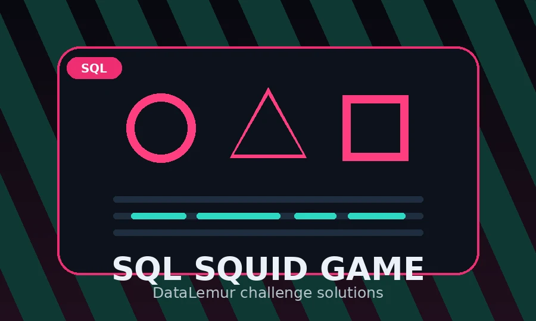

Experiments & tools
Side projects
A growing collection of ideas, tools, and experiments
Machine learning / Neural networks / Deep learning
ML Notes
Notes and visualization focused on multiple topics in Machine Learning

SQL Challenge · DataLemur
SQL Squid Game
SQL puzzles inspired by the Squid Game challenge
Query through each round and compare with my solutions